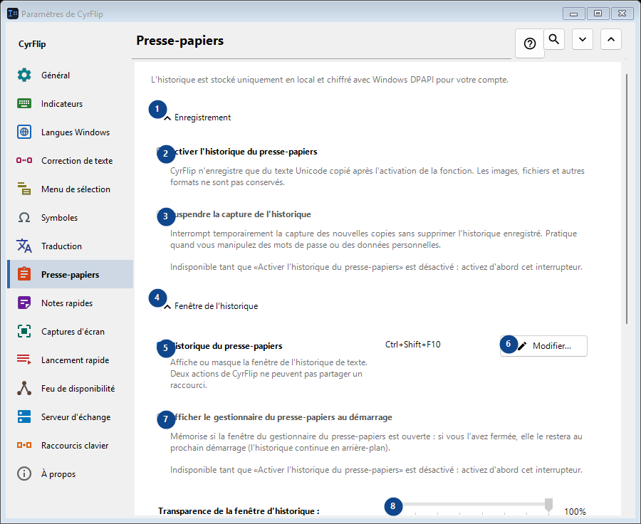
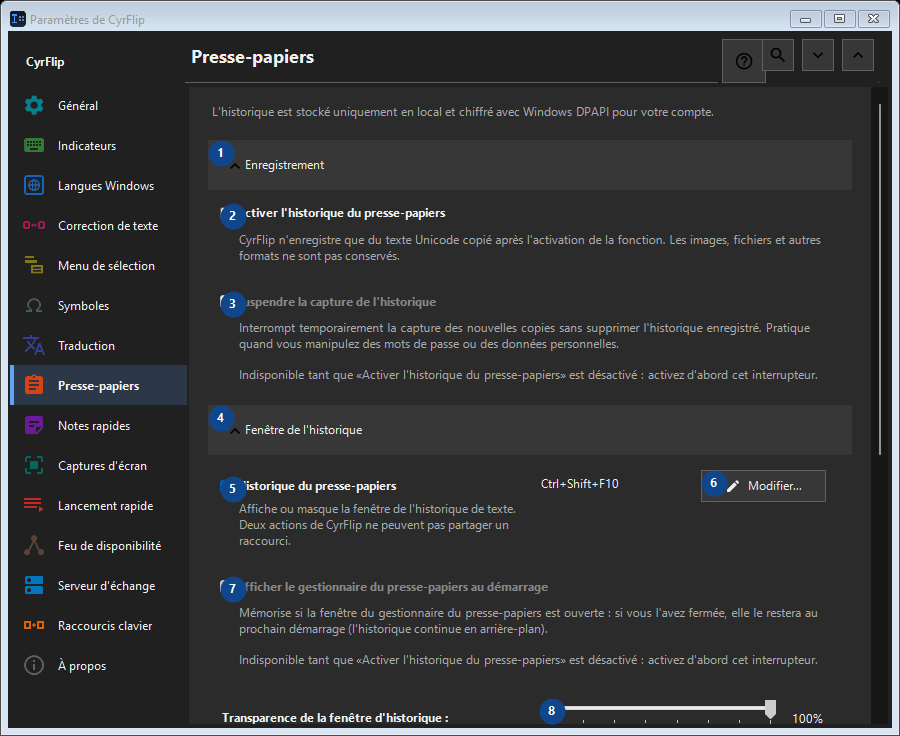

Presse-papiers
À quoi cela sert
L'historique est stocké uniquement en local et chiffré avec Windows DPAPI pour votre compte.


Ordre des actions
Les réglages s’appliquent immédiatement. Aucun ordre n’est imposé ; utilisez les groupes ci-dessous.
Éléments
1. Enregistrement
Utilisez cette commande pour l’action indiquée. Lisez toute confirmation avant de l’accepter.
Vos raccourcis2. Activer l'historique du presse-papiers
CyrFlip n'enregistre que du texte Unicode copié après l'activation de la fonction. Les images, fichiers et autres formats ne sont pas conservés.
Vos raccourcis3. Suspendre la capture de l'historique
Indisponible tant que «Activer l'historique du presse-papiers» est désactivé : activez d'abord cet interrupteur. Cet élément est indisponible. Activez d’abord sa fonction ou sélectionnez une entrée.
Vos raccourcis4. Fenêtre de l'historique
Utilisez cette commande pour l’action indiquée. Lisez toute confirmation avant de l’accepter.
Vos raccourcis5. Historique du presse-papiers
Affiche ou masque la fenêtre de l'historique de texte. Deux actions de CyrFlip ne peuvent pas partager un raccourci.
Vos raccourcis6. Modifier - Historique du presse-papiers
Utilisez cette commande pour l’action indiquée. Lisez toute confirmation avant de l’accepter.
Vos raccourcis7. Afficher le gestionnaire du presse-papiers au démarrage
Indisponible tant que «Activer l'historique du presse-papiers» est désactivé : activez d'abord cet interrupteur. Cet élément est indisponible. Activez d’abord sa fonction ou sélectionnez une entrée.
Vos raccourcis8. Transparence de la fenêtre d'historique
Indisponible tant que «Activer l'historique du presse-papiers» est désactivé : activez d'abord cet interrupteur. Cet élément est indisponible. Activez d’abord sa fonction ou sélectionnez une entrée.
Vos raccourcis9. Rechercher dans l'historique
Ouvre une fenêtre distincte pour rechercher un fragment de texte. Saisissez au moins trois caractères.
Vos raccourcis10. Effacement
Utilisez cette commande pour l’action indiquée. Lisez toute confirmation avant de l’accepter.
Vos raccourcis11. Effacer tout l'historique
Supprime toutes les entrées de la mémoire et du fichier local chiffré. Action irréversible.
Vos raccourcis12. Transfert vers un autre ordinateur
Utilisez cette commande pour l’action indiquée. Lisez toute confirmation avant de l’accepter.
Vos raccourcis13. Exporter...
Un seul fichier texte en clair avec vos notes et l'historique du presse-papiers choisi : il se lit dans n'importe quel éditeur ou sur un téléphone et s'importe dans CyrFlip sur un autre ordinateur. Le fichier n'est pas chiffré. L'importation montre ce qui sera ajouté et ne supprime rien.
Vos raccourcis14. Importer...
Utilisez cette commande pour l’action indiquée. Lisez toute confirmation avant de l’accepter.
Vos raccourcis